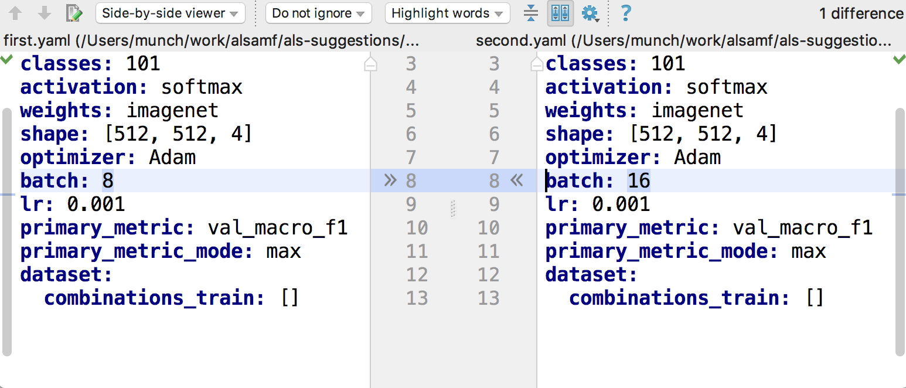

You have just found Musket
Musket is a family of high-level frameworks written in Python and capable of running on top of Keras.
It was developed with a focus of enabling to make fast and simply-declared experiments, which can be easily stored, reproduced and compared to each other.
Use Musket if you need a deep learning framework that:
- Allows to describe experiments in a compact and expressive way
- Provides a way to store and compare experiments in order to methodically find the best deap learning solution
- Easy to share experiments and their results to work in a team
- Provides IDE and visual tooling to make experimentation faster
Goals and principles
Compactness and declarative description
Declarative description is always more compact and human-readable than imperative description.
All experiments are declared in YAML dialect with lots of defaults, allowing to describe an initial experiment in several lines and then set more details if needed.
This is a simple classification experiment, and half of these instructions can be actually omitted:
#%Musket Classification 1.0
architecture: Xception
classes: 101
activation: softmax
weights: imagenet
shape: [512, 512, 4]
optimizer: Adam
batch: 8
lr: 0.001
primary_metric: val_macro_f1
primary_metric_mode: max
dataset:
combinations_train: []
Reproducibility and ease of sharing
As each experiment is simply a folder with YAML file inside, it is easy to store and run experiment.
Putting YAML files into git or sharing them in other way provides other team members with an easy way to reproduce the same experiments locally. Anyone can check your experiments, and add their own to the storage as the storage is simply a folder.
Established way to store and compare results
Musket is lazy by its nature. Each experiment starts with a simple YAML description. There may be many stages in training and prediction, starting with calculating datasets, preprocessing and finishing with inferring and calculating statistics, but for each stage Musket saves results in the sub-folders of experiment folder.
When the experiment is launched, Musket checks, which result files are already in place and only runs what is needed. It is up to team members, what to share: pure YAML desciptions, YAML and final metrics (to compare experiment effectiveness), or also, potentially more heavy intermediate results so other team members can run experiments faster locally.
It is easy to compare two experiments with each other by running any text compare tooling, experiments are just YAML text:

As all experiment statistics is also saved as files, it is easy to compare experiment results and find the best ones by the same text files comparison tooling.
IDE helps here, too, by adding results visualisation tooling.
Flexibility and extensibility
Declarative approach is good and compact, but sometimes we want to define some custom functionality.
Musket supports lots of custom substances: dataset definitions, preprocessors, custom network layers, visualizers etc etc.
Most of the time to define a custom thing, it is enough to put a python file into a top-level folder and define a function with an appropriate annotation, like this:
@preprocessing.dataset_preprocessor
def splitInput(input, parts:int):
result = np.array_split(input,parts,axis=0)
return result
or this:
@dataset_visualizer
def visualize(val:PredictionItem):
cache_path=context().path
path = cache_path + "/" + str(val.id) + ".png"
if os.path.exists(path):
return path
ma = val.x/128 - preprocessors.moving_average(val.x/128, 8000)
std = np.std(ma)
ma[np.where(np.abs(ma) - 2 * std < 0)] = 0
v = ma
fig, axs = plt.subplots(1, 1, constrained_layout=True, figsize=(15, 10))
v[:, 0] += 1
v[:, 2] -= 1
plt.ylim(-2, 2)
axs.plot(v[:, 0], label='Phase 0')
axs.plot(v[:, 1], label='Phase 1')
axs.plot(v[:, 2], label='Phase 2')
axs.legend()
if sum(val.y) > 0:
axs.set_title('bad wire:' + str(val.id))
plt.savefig(path)
else:
axs.set_title('normal wire:' + str(val.id))
plt.savefig(path)
try:
plt.close()
except:
pass
return path
Pipelines and IDE
Musket is family of frameworks, not a single framework for a reason.
There is a core part, a pipeline called Generic Pipeline, which is quite universal and can handle any type of tasks.
Besides it, there are also specialized pipelines with YAML domain syntax better suited for a particular task like Segmentation Pipeline or Classification Pipeline. Such specialized frameworks has reduced flexibility, but more rapid prototyping and a whole set of useful built-ins.
All of those pipelines are supported by musket IDE, which simplifies experiment running and result analysis.

Generic pipeline
Generic pipeline has the most universal YAML-based domain-specific syntax of all pipelines. Its main feature is an ability to define custom neural networks in a declarative manner by declaring blocks basing on built-in blocks, and then referring custom blocks from other custom blocks.
There is also a rich set of declarative instructions that control dataflow inside the network. Most elements like datasets, preprocessors, network blocks, loss functions, metrics etc can be customly defined in python code and later reused from YAML.
imports: [ layers, preprocessors ]
declarations:
collapseConv:
parameters: [ filters,size, pool]
body:
- conv1d: [filters,size,relu ]
- conv1d: [filters,size,relu ]
- batchNormalization: {}
- collapse: pool
net:
#- gaussianNoise: 0.0001
- repeat(2):
- collapseConv: [ 20, 7, 10 ]
- cudnnlstm: [40, true ]
- cudnnlstm: [40, true ]
- attention: 718
- dense: [3, sigmoid]
preprocess:
- rescale: 10
- get_delta_from_average
- cache
preprocessing: preprocess
testSplit: 0.4
architecture: net
optimizer: Adam #Adam optimizer is a good default choice
batch: 12 #Our batch size will be 16
metrics: #We would like to track some metrics
- binary_accuracy
- matthews_correlation
primary_metric: val_binary_accuracy #and the most interesting metric is val_binary_accuracy
callbacks: #Let's configure some minimal callbacks
EarlyStopping:
patience: 100
monitor: val_binary_accuracy
verbose: 1
ReduceLROnPlateau:
patience: 8
factor: 0.5
monitor: val_binary_accuracy
mode: auto
cooldown: 5
verbose: 1
loss: binary_crossentropy #We use simple binary_crossentropy loss
stages:
- epochs: 100 #Let's go for 100 epochs
- epochs: 100 #Let's go for 100 epochs
- epochs: 100 #Let's go for 100 epochs
Segmentation Pipeline
Segmentation Pipeline has a lot of common parts with Generic pipeline, but it is much easier to define an architecture of the network, just name it:
backbone: mobilenetv2 #let's select classifier backbone for our network
architecture: DeepLabV3 #let's select segmentation architecture that we would like to use
augmentation:
Fliplr: 0.5 #let's define some minimal augmentations on images
Flipud: 0.5
classes: 1 #we have just one class (mask or no mask)
activation: sigmoid #one class means that our last layer should use sigmoid activation
encoder_weights: pascal_voc #we would like to start from network pretrained on pascal_voc dataset
shape: [320, 320, 3] #This is our desired input image and mask size, everything will be resized to fit.
optimizer: Adam #Adam optimizer is a good default choice
batch: 16 #Our batch size will be 16
metrics: #We would like to track some metrics
- binary_accuracy
- iou
primary_metric: val_binary_accuracy #and the most interesting metric is val_binary_accuracy
callbacks: #Let's configure some minimal callbacks
EarlyStopping:
patience: 15
monitor: val_binary_accuracy
verbose: 1
ReduceLROnPlateau:
patience: 4
factor: 0.5
monitor: val_binary_accuracy
mode: auto
cooldown: 5
verbose: 1
loss: binary_crossentropy #We use simple binary_crossentropy loss
stages:
- epochs: 100 #Let's go for 100 epochs
Classification Pipeline
Classification Pipeline has a lot of common parts with Generic pipeline too, and as in Segmentation Pipeline it is easy to define an architecture of the network, just name it and set the number of output classes:
architecture: DenseNet201 #pre-trained model we are going to use
pooling: avg
augmentation: #define some minimal augmentations on images
Fliplr: 0.5
Flipud: 0.5
classes: 28 #define the number of classes
activation: sigmoid #as we have multilabel classification, the activation for last layer is sigmoid
weights: imagenet #we would like to start from network pretrained on imagenet dataset
shape: [224, 224, 3] #our desired input image size, everything will be resized to fit
optimizer: Adam #Adam optimizer is a good default choice
batch: 16 #our batch size will be 16
lr: 0.005
copyWeights: true
metrics: #we would like to track some metrics
- binary_accuracy
- macro_f1
primary_metric: val_binary_accuracy #the most interesting metric is val_binary_accuracy
primary_metric_mode: max
callbacks: #configure some minimal callbacks
EarlyStopping:
patience: 3
monitor: val_macro_f1
mode: max
verbose: 1
ReduceLROnPlateau:
patience: 2
factor: 0.3
monitor: val_binary_accuracy
mode: max
cooldown: 1
verbose: 1
loss: binary_crossentropy #we use binary_crossentropy loss
stages:
- epochs: 10 #let's go for 100 epochs